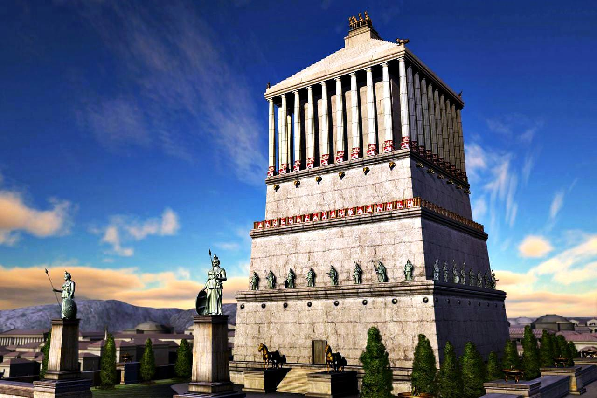
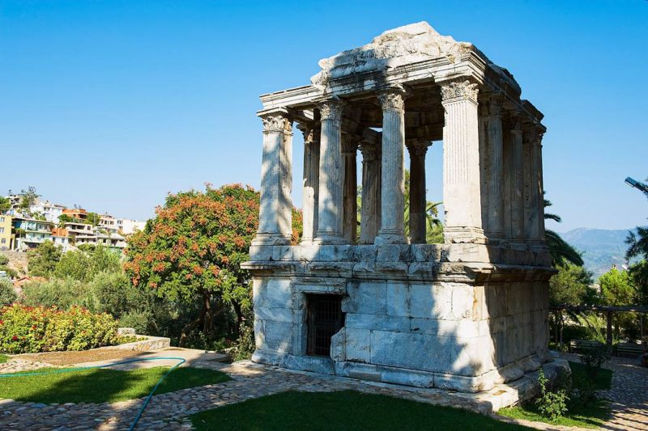
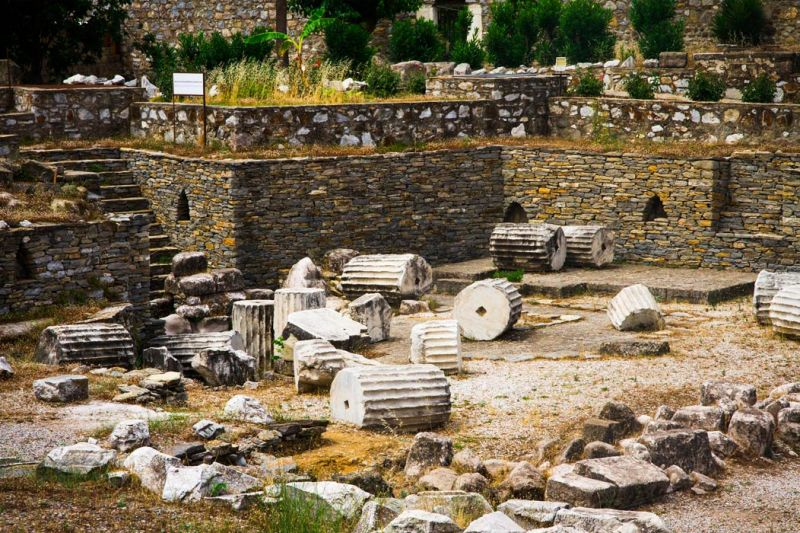
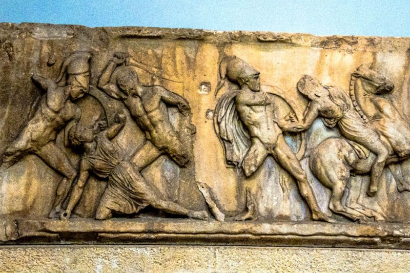
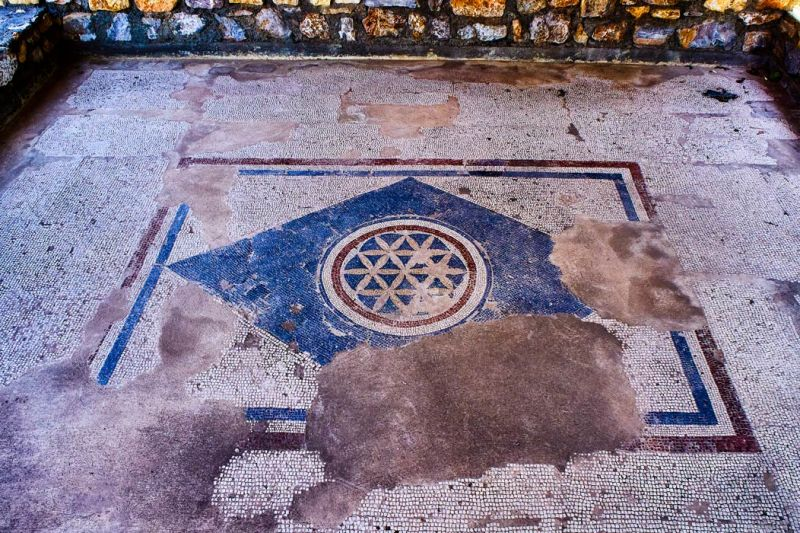

-
Мавзолей в Галикарнасе
-





Галикарнасский мавзолей (греч. Μαυσωλείο της Αλικαρνασσού; тур. Halikarnas
Mozolesi) — гробница карийского сатрапа Мавсола (греч. Μαύσωλος), сооружённая в середине IV века до н. э. по
приказу его супруги Артемисии II в Галикарнасе (ныне — Бодрум, Турция), одно из Семи античных чудес света. Проект
был разработан греческими архитекторами Сатиросом и Пифеем Приенским. Проект гробницы несёт черты
архитектуры некоторых гробниц соседнего царства — Ликии, завоёванного Мавсолом около 360 года до н. э., в
частности, монумента Нереид.
Мавзолей был приблизительно 45 м в высоту, четыре стороны здания были украшены скульптурными рельефами, каждый из
которых был создан одним из четырёх греческих скульпторов: Леохаром, Бриаксисом, Скопасом Паросским и Тимофеем.
Законченное здание мавзолея отличалось таким великолепием, что Антипатр Сидонский причислил его к числу семи чудес
античности. Мавзолей был разрушен к концу XV века рядом землетрясений, и входит в число трёх наиболее
долговечных из Семи чудес (наряду с сохранившейся до настоящего времени пирамидой Хеопса и Александрийским
маяком).
Слово «мавзолей» благодаря гробнице Мавсола вошло во многие языки мира и стало нарицательным. В русский язык оно
вошло из греческого, вероятно, через немецкий или французский.